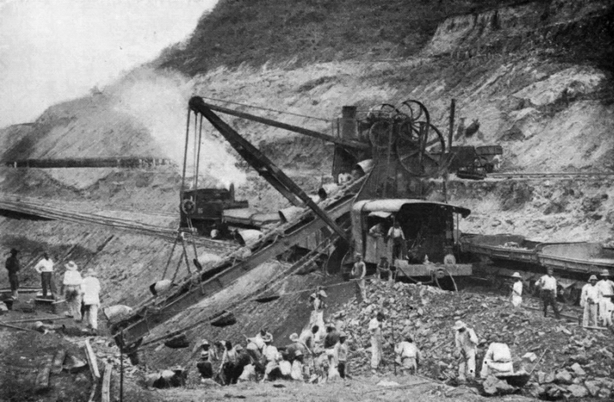

Chapter 6
The Great Cut at Culebra
The mud moved at night. Engineers at the Culebra Cut woke on the morning of 22 September 1883 to find that the eastern slope above their excavation had shifted, carrying several hundred cubic meters of saturated clay and decomposed rock into the channel they had spent three months opening. A steam shovel buried to its boiler sat tilted at an angle. A section of narrow-gauge rail had buckled outward, its ties still attached. The night watchman reported that he had noticed nothing until dawn. By the time the shift was discovered, the excavation face at that point had been set back by roughly the volume of two weeks of work. The company’s weekly report for the period, filed from the isthmus to the Paris office, recorded the cubic meters removed. It did not record the cubic meters returned.
Slides had begun appearing in the cut as soon as excavation reached a depth of several meters below the original ridge line, as the field notebooks of the engineering staff on the Culebra section show. The geology of the Culebra ridge consisted not of solid rock but of layers of basalt overlying saturated volcanic clay and shale. When the overlying material was removed, the clay beneath, exposed to air and rain, began to swell and flow. The slope that had appeared stable in the dry season became, in the rains, a viscous mass that moved under its own weight.
French excavators pushed deeper into the Culebra Cut through 1883. They encountered a geological reality that no amount of financial engineering could overcome: repeated landslides along saturated clay slopes undid months of excavation almost as soon as it was completed. Company reports recorded volumes removed. Internal correspondence acknowledged that slides recurred faster than they could be cleared. The mechanism was understood by the men on site. Engineering staff could read the signs: tension cracks appearing along the crest of the slope, water seeping from the exposed face, the ground beneath the tracks softening until the rails lost gauge. The phenomena were not mysterious. They were the predictable behavior of saturated clay in a tropical climate where annual rainfall exceeded three meters in the watershed and the dry season lasted barely three months.
The clay at Culebra was the same type of material that engineers in France had encountered in railway cuttings along the Loire and the Garonne, where slope failures had been documented for decades. The difference was scale. A railway cutting through clay might produce a slide of a few hundred cubic meters. The cut at Culebra was designed to reach a depth of more than seventy meters through a ridge that ran the full width of the continental divide. Each meter of additional depth increased the lateral pressure on the slope face. Each meter of additional width increased the volume of material that could fail. The correspondence between the isthmus engineering office and the Paris directorate during 1883 and early 1884 contains repeated references to slope instability, to the need for flatter angles, to the impossibility of maintaining the designed slope profiles in the existing material.
These references appeared in official reports, in weekly summaries, in the monthly compilations sent to Paris for inclusion in the company’s published bulletins. The information traveled. What did not travel was the conclusion that followed from it. Doubt routing operated at Culebra through a specific mechanism. The engineering staff reported slope failures as production setbacks. The Paris office read production setbacks as reasons to increase production. A slide that buried a week of excavation was entered into the ledger as a deficit in weekly output. The response to a deficit in output was to raise the quota.
The company had committed to a construction schedule that assumed a certain rate of excavation per day per steam shovel. When slides reduced the net excavation, the schedule slipped. When the schedule slipped, the Paris office demanded higher daily totals. Higher daily totals required more steam shovels, more laborers, more dump cars, more dynamite. More equipment and labor required more money. More money required more bond sales. More bond sales required the appearance of progress. The appearance of progress required the publication of excavation totals that showed steady increases. The totals that showed steady increases did not subtract the volume returned by slides.
The circuit ran as follows. A geological warning entered the system as a production figure. The production figure entered the system as a financial requirement. The financial requirement entered the system as a public assertion. The public assertion traveled outward from Paris to the provincial banks and notary offices where lottery bond certificates were still being sold to small investors across France. The engineering warning had been converted, by passage through the company’s reporting structure, into evidence of progress.
The landslide of September 1883 was representative, not exceptional. Field records show that slides occurred at multiple points along the cut throughout the 1883 rainy season, which ran from April or May through December. Some were minor, a few cubic meters sloughing off the toe of the slope, enough to block a drainage ditch but not enough to halt excavation. Others were major. The September slide buried equipment and required two weeks of clearing operations before the shovel could be returned to its working position. During those two weeks, the shovel was not excavating. Its daily output was zero. But the weekly report for that period, filed to Paris, recorded the output of the other shovels still operating in the cut. The total appeared, to a reader in Paris who did not know which shovels had been halted, as a slight dip in productivity attributable to weather.
The company’s response was to raise worker quotas. The construction schedule called for the removal of a specified volume of material from the cut per month. When monthly totals fell below the target, the Paris office instructed the isthmus directorate to increase the number of laborers, extend working hours, and add equipment. The isthmus directorate complied. More Jamaican and Colombian laborers were recruited. More steam shovels were ordered from the United States. More narrow-gauge track was laid. The company’s published reports for 1883 show a steady increase in the workforce and in the number of shovels operating in the cut. They also show, to any reader who compared the excavation totals against the design volume, that the rate of removal was insufficient to complete the cut within the scheduled timeframe.
The design volume for the Culebra Cut, as calculated by the company’s own engineers, was on the order of tens of millions of cubic meters. The monthly removal rate in 1883 was a fraction of what was needed. And the monthly removal rate did not account for the material that returned. The distinction between gross excavation and net excavation was the critical figure that the company’s public reports did not provide. Gross excavation was the total volume of material loaded onto dump cars and hauled away from the cut. That figure appeared in the published bulletins. Net excavation was the gross figure minus the volume returned by slides. That figure determined whether the cut was actually advancing toward its design depth. The company’s internal correspondence acknowledged the gap between the two. The company’s public reports did not.
Armand Reclus, who had served as the company’s principal engineer on the isthmus since the beginning of construction, resigned in 1882. The official notice recorded his resignation in the routine language of personal reasons. The internal correspondence told a different story. Reclus had concluded that the sea-level plan, as designed, could not be executed at Culebra without a system of locks to control the water that the slopes could not hold back. His recommendation, like the field reports on slides, traveled to Paris. His recommendation did not become a design revision.
Reclus was not the last. Beginning with his departure in 1882, a series of principal engineers resigned from the project over the following two years. Each departure removed from the isthmus a man who had seen the geology firsthand. Each departure was replaced by a new appointment, and each new appointee arrived with the same instructions: excavate the cut to the design profile, maintain the schedule, report the volumes. The cycle of resignation and replacement did not produce a reconsideration of the design. It produced a turnover in personnel. The design remained. The schedule remained. The sea-level plan, chosen at the Paris congress of 1879, remained the only plan the company was organized to execute.
The counter-explanation is straightforward and must be answered directly. The Panama project was beyond the engineering and medical capacity of the 1880s. The combination of tropical rain forests, a debilitating climate, the need for canal locks, and the lack of any ancient route to follow made the enterprise objectively difficult at any plausible cost. Yellow fever and malaria killed workers at rates that crippled labor recruitment. The geology of the Culebra ridge, with its saturated clays and decomposed volcanic rock, would have challenged any engineering team of any era. These facts are not in dispute. The question is whether they made failure inevitable, or whether they made failure inevitable only under the specific organizational and financial structure that the Compagnie Universelle had built around the project.
The geological evidence does not support the conclusion that a sea-level canal through Culebra was physically impossible. The American canal, built after the French collapse, passed through the same ridge at the same location. Under American administration it was renamed the Gaillard Cut. The Americans used a lock system that flooded the interior and reduced the required excavation depth. They did not attempt a sea-level cut.
Their design called for a dam at Gatún that would create an artificial lake, letting gravity propel the water from the lake through the mountains at the Culebra Cut. The lake would connect to the Pacific through the cut and to the Atlantic through a set of locks. The design reduced the excavation volume at Culebra by raising the channel elevation. It also addressed the Chagres River problem that French engineers had warned about from the beginning. The river, instead of being an enemy that had to be tamed by diversion channels and levees, became the water supply for the lake.
The American design did not eliminate slides at Culebra. The geological conditions that produced slides under French excavation produced slides under American excavation. The cut experienced major slope failures during the American construction period, and the canal’s operational history includes closures caused by slides. The closure of the canal for nearly seven months after a landslide in the Culebra Cut on 18 September 1915, less than a year after the canal had opened to traffic, demonstrated that the geological instability was a permanent feature of the terrain, not a consequence of a particular engineering approach.

What the American design did was reduce the scale of the cut and the exposure of the slope faces, making the slides manageable as a maintenance problem rather than catastrophic as a construction failure.
The difference between the French and American experiences at Culebra was not geological. It was organizational. The French design required a cut so deep and so wide that the slopes could not be maintained in the existing material. The American design, by accepting a lock system, reduced the cut to dimensions that the slopes could sustain.
The distinction matters because it locates the cause of the French failure not in the isthmus but in the decision system. The isthmus was difficult. The isthmus was not impossible.
The sea-level plan, chosen in Paris in 1879 over the objection of engineers who had surveyed the terrain, required a cut through Culebra that the geology could not support at the dimensions specified. The lock plan, rejected in Paris, would have required a smaller cut that the geology could support.
The choice between the two plans was made not on engineering grounds but on financial and political grounds. The sea-level canal was the canal that de Lesseps had built at Suez. It was the canal that the Paris congress had been convened to endorse. It was the canal that the lottery bond prospectus described to investors. It was the canal that the company was organized, capitalized, and publicly committed to build. The geological reality at Culebra did not change the plan because the plan could not be changed without changing everything else: the prospectus, the bond structure, the construction schedule, the public assertions, the name.
Panamanian accounts of the Culebra slides differ from the French accounts in emphasis rather than in fact. French reports describe the slides as obstacles to be overcome through engineering effort and labor mobilization. They emphasize the volume of material removed, the number of shovels operating, the length of track laid, the size of the workforce. The narrative is one of heroic effort against an adversarial nature.
Panamanian sources note that the rainy-season slides along the Culebra ridge had been a known feature of the terrain long before the French arrived. The road across the isthmus, the Camino Real, had been rerouted multiple times over the centuries to avoid sections where the slope failed during rains. Local farmers and mule drivers knew which sections of the ridge were stable and which were not. This knowledge was available. It was not sought.
The company’s engineering staff did not consult local knowledge because the company’s design process did not include a mechanism for incorporating it. The survey parties that preceded construction had been sent to measure: to take levels, to calculate volumes, to map the route. They had not been sent to ask.
The design was made in Paris, from the survey data, by men who had not seen the terrain in the rainy season. The construction was managed on the isthmus, by men who saw the terrain daily but did not have the authority to change the design. The gap between the two was the gap through which the warning passed and was lost.
The consequences accumulated through 1883 and into 1884. Each slide required clearing operations that consumed labor and equipment time without advancing the cut. Each clearing operation produced excavated material that had to be hauled away and dumped, increasing the cost per cubic meter of net excavation. Each increase in cost was absorbed by the company’s operating budget, which was funded by the proceeds of bond sales. The bond sales, in turn, depended on the company’s ability to publish reports showing progress. The reports showed progress because they reported gross excavation. The gross excavation figure rose because the company added shovels and laborers. The net excavation figure did not rise at the same rate. The gap between gross and net widened with each slide.
By the end of the 1883 rainy season, the engineering staff on the isthmus had compiled enough data to estimate the annual volume of slide material that would need to be re-excavated. The estimate was not published. It appeared in internal correspondence, where it was used to calculate the additional equipment and labor that would be needed in the following dry season to make up the deficit. The calculation assumed that the slides would stop when the rains ended. The calculation did not assume that the slides would recur in the next rainy season. The assumption was wrong. The slides recurred because the geological conditions that produced them were permanent features of the site, not temporary disruptions.
The company’s response to the 1883 slides was to increase the excavation target for 1884. The Paris office, having received the year’s production figures and having noted that they fell below the scheduled rate, instructed the isthmus directorate to increase the number of steam shovels operating in the cut, to extend the working day, and to recruit additional labor. The instruction did not include a design revision. It did not include a change in slope angles. It did not include a reconsideration of the sea-level plan. It assumed that the deficit was a problem of throughput rather than a problem of geology.
The assumption was not irrational. It was the only assumption available within the company’s organizational structure.
The company was capitalized for a sea-level canal. Its bonds were sold on the basis of a sea-level canal. Its construction schedule was designed for a sea-level canal. A design revision would have required a new plan, a new schedule, a new prospectus, and a new round of capitalization. A new round of capitalization would have required an admission that the existing plan was flawed. An admission that the existing plan was flawed would have affected the market price of the bonds already sold. The bonds already sold were held by hundreds of thousands of small investors across France whose savings were, in many cases, committed in their entirety to the venture.
The mortality data from the isthmus compounded the engineering crisis. The hospital registers at Colón and Panama, which the company had maintained since 1881, recorded the admission of workers suffering from yellow fever and malaria and, in many cases, their death. The registers were local documents. They were kept on the isthmus, by the company’s medical staff, for the company’s administrative use. Summaries were sent to Paris. The summaries did not always reproduce the detail of the registers. A register entry might show that a worker had been admitted with fever on a specific date, had been treated with quinine or other available remedies, and had died on a subsequent date. The summary sent to Paris might report the number of admissions and deaths for the period without the individual detail.
The mortality rate, as calculated from the summaries, appeared manageable: a percentage of the workforce, within expected ranges for tropical construction, attributable to climate. The mortality rate, as calculated from the registers, was higher. The difference between the two figures was the same kind of gap as the difference between gross and net excavation. The local record showed the cost. The reported figure showed the cost that the system was prepared to acknowledge.
The structure that would later convert private loss into a public verdict shielding the state from systemic blame was not yet active in 1883. The company was still a private enterprise. Its bonds were private instruments, guaranteed by the company’s assets and projected revenues, not by the French state. The state’s involvement was limited to the legislative authorization that had granted the company the right to issue lottery bonds.
But the structure was already in place. The bondholders were French citizens. Their savings were invested in a French company, operating under French law, headed by a French national hero.
When the company’s engineering failures and financial shortfalls became undeniable, the question of who bore the loss would become a political question. The state would be asked to intervene. The terms of the intervention would determine whether the failure was attributed to the company’s decision system or to the inherent impossibility of the project. The geological evidence at Culebra, which showed that a lock canal was feasible where a sea-level canal was not, would not be the evidence that shaped the political verdict. The political verdict would be shaped by the financial structure, by the number of bondholders, by the proximity of elections, and by the relative power of the interests involved.
The Culebra Cut in late 1883 was not yet a crisis. It was a problem. The problem was being managed through the only mechanism the company had: increase output, report the increase, sell more bonds.
The mechanism was working. The excavation totals were rising. The workforce was growing. The equipment inventory was expanding. The bonds were selling.
The problem was that the mechanism was solving the wrong problem. The company was solving a throughput problem when the actual problem was a design problem. More shovels could excavate more clay. They could not prevent the clay from returning.
The engineers on site knew this. The correspondence shows it. The field notebooks show it. The slide records show it. The hospital registers show the parallel crisis in the workforce: mortality rising, recruitment struggling, the labor supply thinning as word of conditions on the isthmus reached the Caribbean islands and Colombia where the company recruited.
The information was generated. The information traveled. The information arrived at the Paris office, where it was read, filed, and converted into instructions to increase output. The conversion was not malicious. It was structural. The company’s reporting system was designed to measure progress toward a fixed goal. It was not designed to question the goal.
The goal was a sea-level canal. The goal had been set in Paris, by a congress, under the chairmanship of a man whose reputation and authority were sufficient to overrule every objection. The goal could not be questioned without questioning the authority that had set it. The authority was the basis of the bond sales. The bond sales were the basis of the construction. The construction was the basis of the goal.
The slide at Culebra on 22 September 1883 buried a steam shovel. The shovel was excavated and returned to service. The slope above it was re-cut to a shallower angle. Within weeks, the shallower angle proved insufficient. The slope failed again. The shovel was buried again. The cycle continued through the rainy season and into the dry season, where the slides slowed but did not stop.
The dry-season slides were smaller, slower, less dramatic. They did not bury equipment. They simply moved the toe of the slope outward, narrowing the channel floor by increments that were barely visible on a weekly basis but that, accumulated over months, reduced the effective width of the cut by a measurable amount.
The design called for a channel floor of a specified width. The actual channel floor was narrower than the design. The difference was not reported as a design deficit. It was reported as a work-in-progress figure. The channel would be widened to the design specification when excavation reached the design depth. This was the plan. The plan assumed that the slopes would hold at the design angle when the full depth was reached. The slopes were not holding at the design angle at the partial depth already achieved.
The geological evidence was available. The engineering analysis was competent. The warnings were specific, documented, and communicated through official channels. What the warnings could not do was change the plan. The plan was fixed by the financial structure. The financial structure was fixed by the bond sales. The bond sales were fixed by the public commitment to a sea-level canal. The public commitment was fixed by the reputation of Ferdinand de Lesseps. The reputation was the asset. The asset was the collateral. The collateral was the bonds. The bonds were held by the citizens of France.
By the end of 1883, the Culebra Cut had reached a depth of roughly twenty meters at its deepest point. The design depth was more than seventy. The excavation volume removed to date was a fraction of the total required. The slides had returned a significant portion of the volume removed. The workforce was sickening. The hospital registers were filling. The engineering staff was turning over. The bond proceeds were funding the operation, but the operation was not advancing at the rate the bond prospectus had promised. The gap between the promised schedule and the actual schedule was widening. The gap between the published excavation totals and the net excavation progress was widening. The gap between the design and the geology was widening.
The company entered 1884 with higher targets, more equipment, and a larger workforce than it had possessed at the start of 1883. It also entered 1884 with a cut that was not deep enough, slopes that were not stable enough, a workforce that was not healthy enough, and a financial structure that could not absorb any of these facts without collapsing. The capital had to keep flowing. The cut had to keep deepening. The plan had to remain sound. And the mud, when it rained, kept moving. The steam shovel that had been buried in September was buried again in the first rains of the 1884 season. The engineering staff recorded the event in the weekly report. The report traveled to Paris. Paris read the report and instructed the isthmus to increase the daily excavation target.